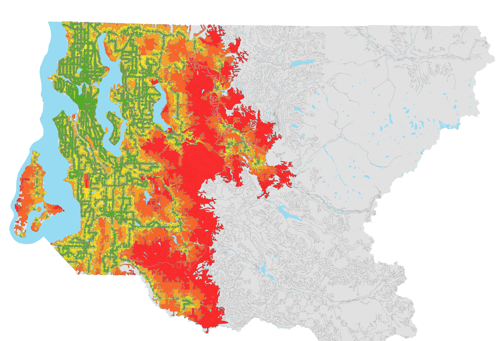
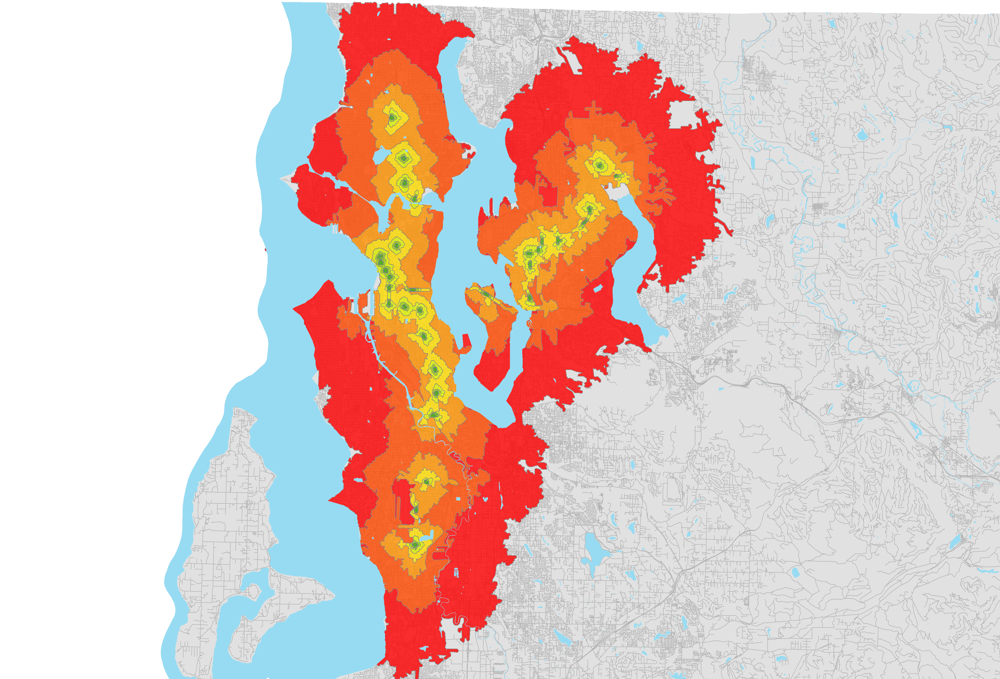
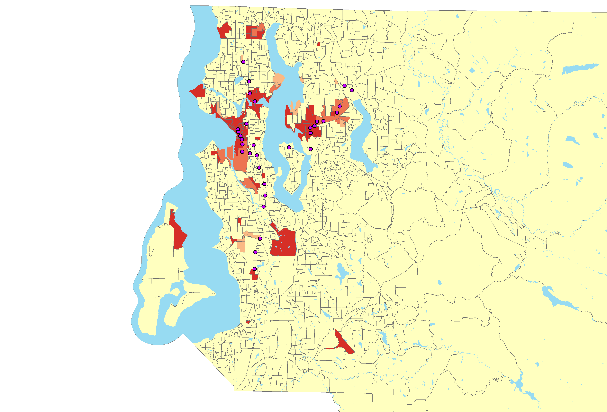

For the network analysis, the bus stops are mostly evenly spread throughout Seattle except north of Lake Washington. Some rural areas are also a little concerning with less bus service, but light rail would most likely not be expanded into those areas anyway. This is because there are fewer people living in rural areas, so there would not be enough riders to support a light rail system. There are a couple gaps in the map with the service areas of bus stop service, but that map also does not take into account other bus transit centers. So, the bus coverage may be more spread out than the map portrays. Also on the map of the time it takes to drive to park and ride lots the coverage is pretty spread out through the Seattle area. More coverage may be needed in places such as west of Queen Anne because it takes over half an hour to drive to a park and ride from there.
Figure 3: Service areas around each bus stop based on walking.
The map of the walk time to the Link Light Rail stations shows there are some major gaps in the system built so far. Places such as between West Seattle and White Center are very cut off from any light rail service. This area also has high density and low income which will be described more later. Another area with very little access is south of Lake Washington in the Renton area. This area actually has a mostly average density and income, but there are a lot of people living in this area. Again, west of Queen Anne has very little coverage on this map. Service could also be expanded further into North Seattle.
Figure 4: Service areas around each rail station based on walking.
Based on the index of low income and high density it looks like that some of the places that need light rail most is West Seattle, Delridge, and White Center. Tukwila and Renton would also benefit from expanded light rail. It also looks like northern Seattle is in need of expansion. One limitation of the study is that it is hard to tell where the vacant lots are and the data may not be accurate. Although, there is most certainly many areas where there are vacant lots that could be turned into park and rides. Ultimately the data used for vacant lots is not very helpful for my project, so it was not used.
Figure 5: Hot spot map of clusters of high land value in King County.
Currently it seems like the light rail is being expanded into areas where land value is higher. The light rail system was initially built in areas with high percentages of minority and low income populations where land value is not as high (United States 4-48). This first segment was originally described as a “starter system” (Pryne). Now light rail is being expanded into areas with higher land value because there is more political and financial support in those areas. Often light rail transit is built where the greatest political and financial support is located (Cohen-Blankshtain 359).
Continue to Literature Review